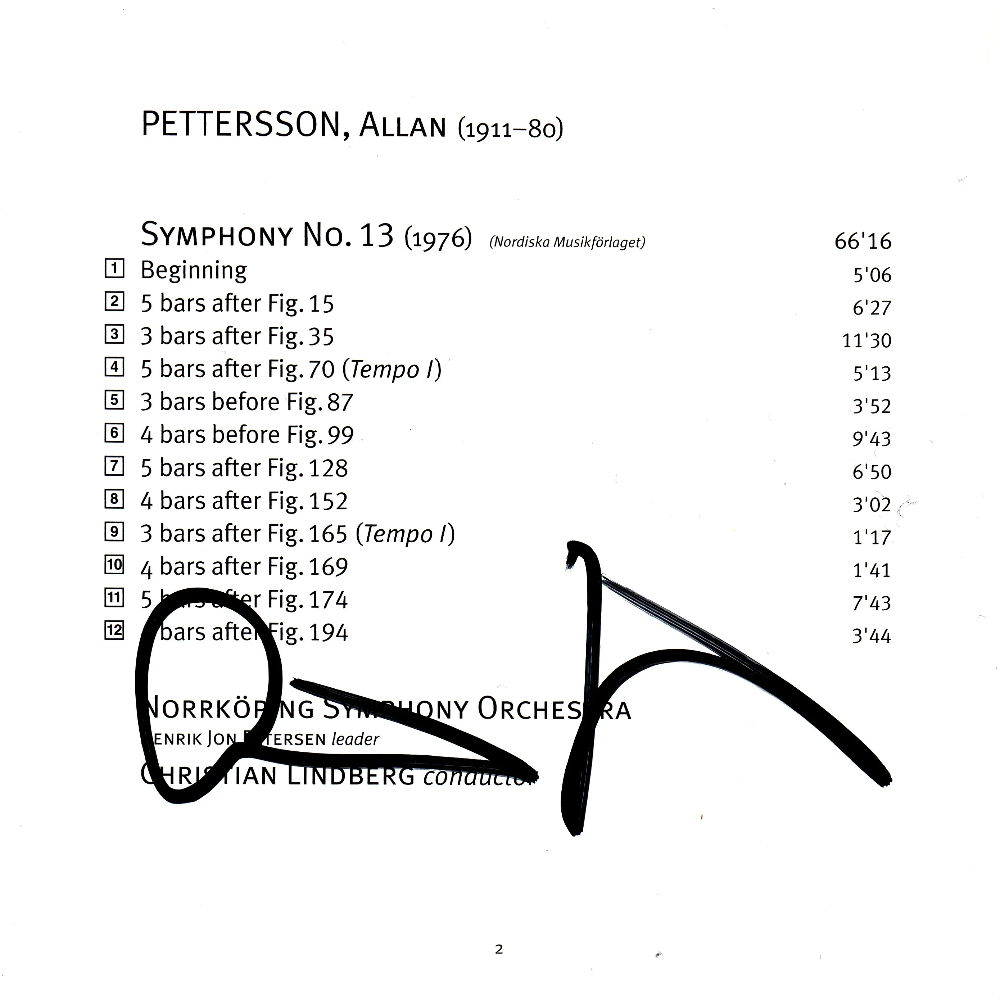

Back
Allan Pettersson
Swedish Composer
Autograph Christian Lindberg

Autograph session on November 8, 2015. Lindberg, Nürnberger Symphoniker, Pettersson: Symphonie Nr. 1, Meistersingerhalle, Nürnberg, Germany.